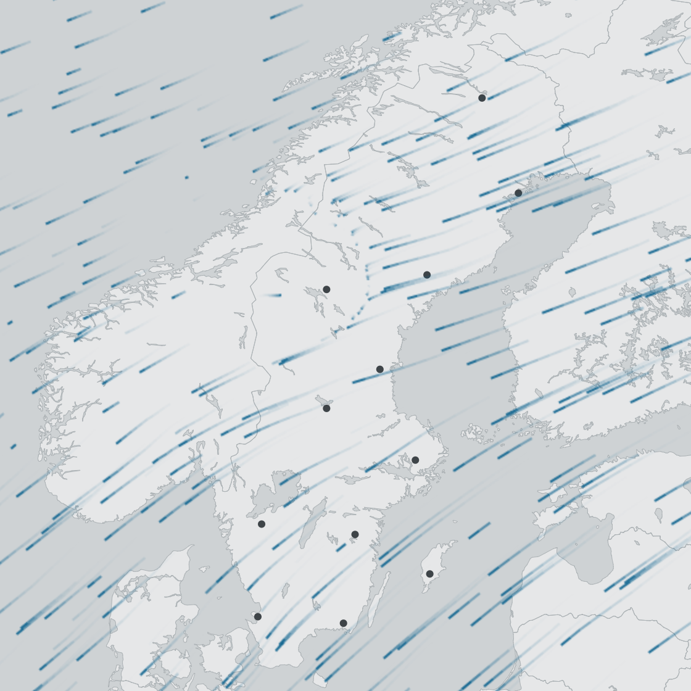

Process vertical profile data for visualizations
Peter Desmet
2017-05-19
Preface
This tutorial describes how to process vertical profile (vp) data1 for visualizations, such as TIMAMP or the bird migration flow visualization. You can also use it to just download or extract vp data for further analysis.

Bird migration flow visualization for Sweden
Bird migration data generated from weather radar data.↩